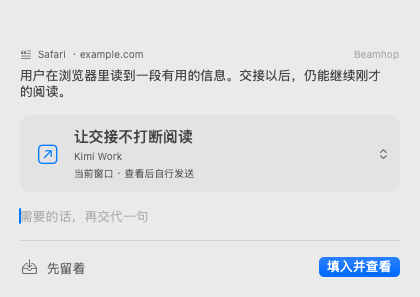
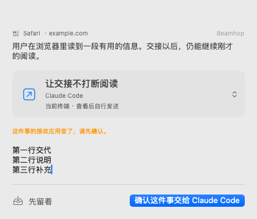
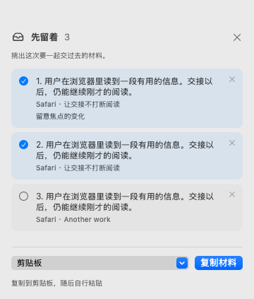
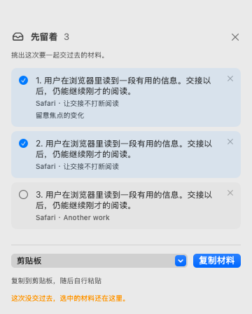
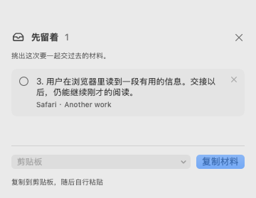

BEAMHOP · 原生 macOS 截图
让一次交接顺手。
从当前应用唤出紧凑浮层，确认去处，加一句交代。需要时，再把材料留在角落。这里展示的是实际 AppKit / SwiftUI 界面。
开发中 · macOS 15.7.9 · 2026 年 10 月 20 日
截图语言
外观
38 / 38
01 / BEAMHOP
先确认去处。
一行事项名称，下方说明接收应用和实际动作。浮层接收键盘输入时，保持来源应用的激活状态。


点击图片查看原尺寸 PNG
去处变了，就说清楚。
这件事的接收应用发生变化时，先确认新去处。备注变长，浮层随内容调整。


只交这次选中的材料。
从角落的暂存材料中选取一部分。来源、交代与原有顺序一起保留。


失败以后，还在原处。
投放未成功时，材料和选中状态都保留，可以继续处理。


交出去的部分先离开。
本次准备成功后，只移除选中的暂存条目。未选材料留在角落，原始记录仍在 Inbox。


实际运行的验证
四种语言／外观组合共 152 项界面断言通过。这 20 张图片来自生产界面和演示数据，生成后经过人工查看。
键盘焦点、原生输入、去处菜单、取消与备注保留、材料选择及失败重试。
当前的交接范围
事项名称目前记住的是接收应用，还不能定位到具体会话。填入内容后会切到接收应用供你检查；复制和暂存则保留来源上下文。
真实登录后的 agent 投放、VoiceOver 朗读、多屏和全屏场景仍待集成验证。已复制或已准备不表示 agent 已执行。